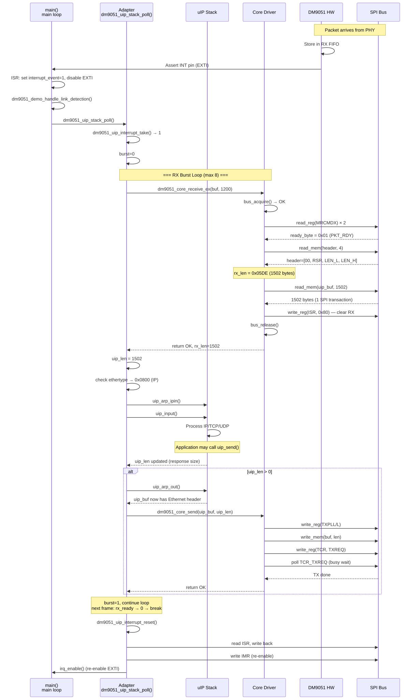
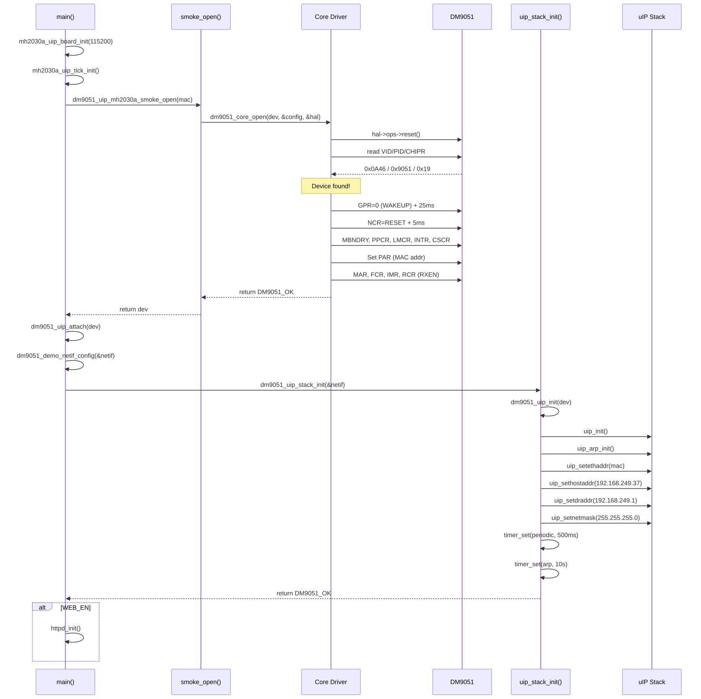
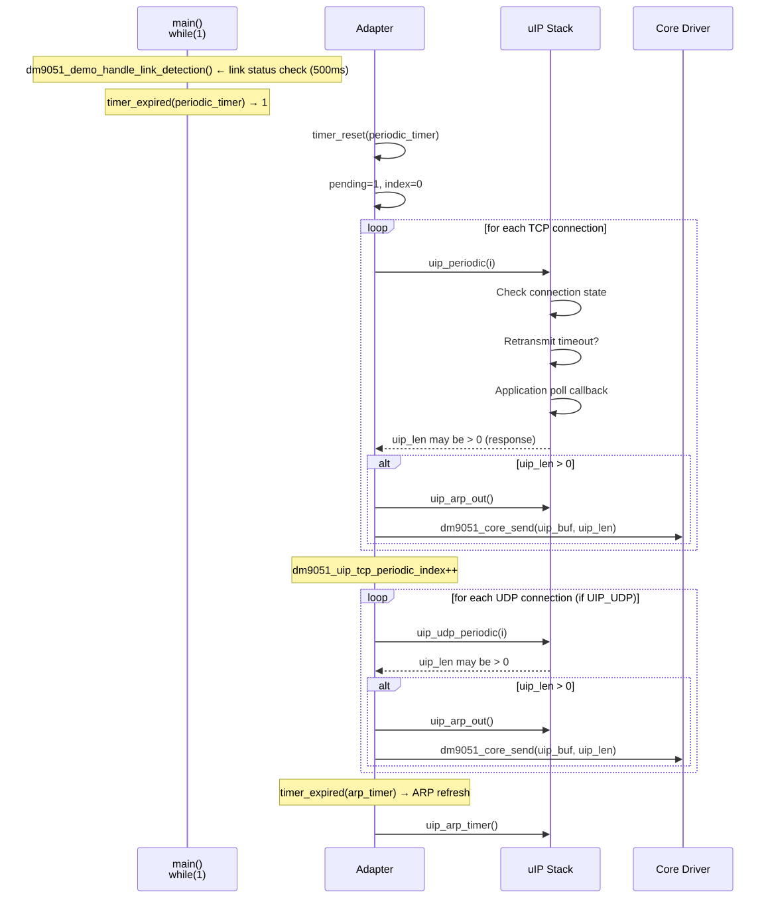

DM9051 uIP Adapter Layer 深度分析
專案: MH2030_Demo · 目錄: ModuleDemo/DM9051A/dm9051_driver/
MCU: MH2030A
Ethernet: DM9051 (SPI)
TCP/IP: uIP 1.0
RTOS: Bare-metal
1. 架構總覽
分層職責
| Layer | 職責 | 檔案位置 |
|---|---|---|
| Application | 網路應用邏輯, main loop, link detection | examples/uip_mh2030a_demo/main_uip_mh2030a_demo.c |
| uIP Stack | TCP/IP 協定處理, ARP, 重組 | middlewares/3rd_party/uip/ |
| Adapter | 串接 uIP 與 DM9051 driver, RX/TX 排程 | adapters/uip/ |
| Core Driver | DM9051 初始化, PHY 存取, RX/TX 流程 | core/src/dm9051_core.c |
| HAL | SPI register/memory 讀寫抽象介面 | hal/inc/dm9051_hal.h |
| Platform Port | MCU 專屬 SPI 實作, GPIO, EXTI | port/mh2030a/ |
2. 實體目錄與檔案階層
2.1 dm9051_driver/ 完整目錄樹
dm9051_driver/
├── CMakeLists.txt / Makefile / README.md
├── adapters/
│ ├── lwip/ (dm9051_lwip.c/.h, lwipopts.h)
│ └── uip/ (dm9051_uip_stack.c/.h, dm9051_uip.c/.h) ← 本文件主體
├── core/
│ ├── inc/ (dm9051_core.h, dm9051_regs.h, dm9051_types.h)
│ └── src/ (dm9051_core.c, dm9051_debug.c)
├── docs/ (PORTING_GUIDE.md, plan/*.md)
├── examples/
│ ├── lwip_mh2030a_demo/
│ └── uip_mh2030a_demo/ (main_uip_mh2030a_demo.c, smoke files)
├── hal/inc/ (dm9051_hal.h)
└── ports/mh2030a/ (SPI Polling / DMA, EXTI, board init, clock)2.2 目錄與分層對應
| 目錄 | 對應架構層 | 角色 |
|---|---|---|
adapters/uip/ | 本文件分析主體 | uIP ↔ DM9051 adapter glue |
adapters/lwip/ | Adapter 層 (lwIP) | lwIP ↔ DM9051 adapter glue |
core/ | DM9051 Core Driver | 裝置初始化、RX/TX、PHY、IRQ |
hal/ | HAL Abstraction | SPI register/mem 操作抽象介面 |
ports/mh2030a/ | Platform Port | MH2030A (AT32F403A) SPI/GPIO/IRQ 實作 |
examples/ | Application 範例 | main() + demo 流程 |
2.3 adapters/uip/ 檔案列表
| 檔案 | 功能 |
|---|---|
dm9051_uip.h | Adapter public API header（不依賴平台標頭） |
dm9051_uip.c | Adapter 實作（包裝 dm9051_core_*() API） |
dm9051_uip_stack.h | Stack loop header（init + poll） |
dm9051_uip_stack.c | uIP stack 整合 loop（RX drain, periodic, ARP） |
當前狀態:
staging（dm9051_uip_target_mode() 回傳 "staging"）。3. 檔案用途分析
3.1 dm9051_uip.h — Adapter Public API
// Init
int dm9051_uip_init(const dm9051_netif_device_t *dev);
int dm9051_uip_attach(dm9051_device_t *dev);
// RX
uint16_t dm9051_uip_input(uint8_t *buf, uint16_t buf_len);
int dm9051_uip_last_rx_status(void);
// TX
int dm9051_uip_output(const uint8_t *buf, uint16_t len);
// Interrupt / Polling
int dm9051_uip_interrupt_mode(void);
int dm9051_uip_interrupt_take(void);
void dm9051_uip_interrupt_reset(void);
void dm9051_uip_poll(void);
// Diagnostic
const char *dm9051_uip_target_mode(void);3.2 dm9051_uip.c — Internal State
static dm9051_device_t *dm9051_uip_attached_dev; // 綁定的 DM9051 device
static int dm9051_uip_last_rx_status_value; // 最後一次 RX 狀態3.3 dm9051_uip_stack.c — uIP Stack Integration
// Internal state (conditional on DM9051_UIP_ENABLE_PERIODIC)
static struct timer dm9051_uip_periodic_timer; // 500ms TCP/UDP 計時器
static struct timer dm9051_uip_arp_timer; // 10s ARP 計時器
static uint8_t dm9051_uip_tcp_periodic_index;
static uint8_t dm9051_uip_udp_periodic_index;
static uint8_t dm9051_uip_tcp_periodic_pending;
static uint8_t dm9051_uip_udp_periodic_pending;
// Internal (static) functions
static void dm9051_uip_stack_send_if_needed(void);
static int dm9051_uip_stack_drain_rx(void);
static uint8_t dm9051_uip_stack_rx_pending_from_burst(int);
static void dm9051_uip_stack_print_rx_burst(...);4. uIP API 對應
Init 呼叫鏈 (dm9051_uip_stack_init())
dm9051_uip_stack_init(&dev)
├── dm9051_uip_init(dev) // 驗證 netif_device
├── uip_init() // uIP stack init
├── uip_arp_init() // ARP table init
├── uip_setethaddr(mac)
├── uip_sethostaddr(ip)
├── uip_setdraddr(gw)
├── uip_setnetmask(mask)
└── timer_set() x2 // periodic (500ms) + ARP (10s)RX / TX / Periodic 呼叫鏈
RX 路徑
uip_len = dm9051_uip_input(uip_buf, UIP_BUFSIZE)
if ethertype == IP:
uip_arp_ipin() → uip_input() → send_if_needed()
if ethertype == ARP:
uip_arp_arpin() → dm9051_uip_output(uip_buf, uip_len)TX 路徑
dm9051_uip_stack_send_if_needed()
├── uip_arp_out() // ARP resolution + Ethernet header
└── dm9051_uip_output(uip_buf, uip_len)Periodic
dm9051_uip_stack_poll()
├── dm9051_uip_stack_drain_rx() // up to 8 frames
├── uip_periodic(i) // TCP (per connection)
├── uip_udp_periodic(i) // UDP (per connection)
└── uip_arp_timer() // every 10sAPI Mapping Table
| uIP 角色 | Adapter API | Core Driver API |
|---|---|---|
| Init | dm9051_uip_stack_init() | dm9051_core_open() |
| RX frame | dm9051_uip_input() | dm9051_core_receive_ex() |
| TX frame | dm9051_uip_output() | dm9051_core_send() |
| IRQ check | dm9051_uip_interrupt_take() | dm9051_core_interrupt_take() |
| IRQ reset | dm9051_uip_interrupt_reset() | dm9051_core_interrupt_reset() |
| Poll | dm9051_uip_stack_poll() | — |
| Poll TX done | dm9051_uip_poll() | dm9051_core_tx_poll_done() |
5. DM9051 Driver API 對應
// Lifecycle
dm9051_core_default_config(config) / config_is_valid(config)
dm9051_netif_device_is_valid(dev)
dm9051_core_open(dev, config, hal) / dm9051_core_close(dev)
// RX
dm9051_core_receive(dev, buf, buf_len)
dm9051_core_receive_ex(dev, buf, buf_len, len)
// TX
dm9051_core_send(dev, buf, len) / dm9051_core_tx_poll_done(dev)
// PHY
dm9051_core_phy_read(dev, reg) / phy_write(dev, reg, val)
dm9051_core_link_is_up(dev)
// Interrupt
dm9051_core_interrupt_set(dev, irq_line) / take(dev) / reset(dev)
// Info
dm9051_core_mac(dev) / device_found(dev) / vendor_id(dev)
dm9051_core_product_id(dev) / chip_revision(dev)Adapter 對應關係
| Adapter API | Core Driver API | 備註 |
|---|---|---|
dm9051_uip_init(dev) | dm9051_netif_device_is_valid() | 只驗證參數 |
dm9051_uip_attach(dev) | 直接存 attached_dev | 保存 device pointer |
dm9051_uip_input(buf,len) | dm9051_core_receive_ex() | 讀取 RX frame |
dm9051_uip_output(buf,len) | dm9051_core_send() | 寫入 TX FIFO |
dm9051_uip_interrupt_take() | dm9051_core_interrupt_take() | 取得 event flag |
dm9051_uip_interrupt_reset() | dm9051_core_interrupt_reset() | 清除 ISR + re-enable |
dm9051_uip_poll() | dm9051_core_tx_poll_done() | 非同步 TX 輪詢 |
dm9051_uip_interrupt_mode() | 讀 dev->runtime.config.interrupt_mode | poll/interrupt mode |
6. RX/TX 資料流
6.1 RX 完整路徑
[Application Main Loop] [main_uip_mh2030a_demo.c:184]
│
├── dm9051_demo_handle_link_detection() ← link 狀態監測
│
└── dm9051_uip_stack_poll()
│ │
│ ├── [Poll Mode] 直接進入 RX drain
│ ├── [IRQ Mode] dm9051_uip_interrupt_take()
│ │ 檢查 interrupt_event flag
│ │
│ └── dm9051_uip_stack_drain_rx() ── 最多 8 frames per call
│ │
│ ├── dm9051_uip_input(uip_buf, UIP_BUFSIZE)
│ │ └── dm9051_core_receive_ex(dev, uip_buf, UIP_BUFSIZE, &rx_len)
│ │ ├── dm9051_core_bus_acquire(dev, hal)
│ │ │ ├── enter_critical()
│ │ │ ├── if bus_busy → return ERR_NOT_READY
│ │ │ └── bus_busy = 1, exit_critical()
│ │ │
│ │ ├── dm9051_core_rx_ready(dev, &ready_byte)
│ │ │ └── read_reg(hal, DM9051_MRCMDX) x2
│ │ │ └── hal->ops->read_reg(ctx, reg, &val)
│ │ │ └── [SPI Transaction: 0x70 | 0x00, read 1 byte]
│ │ │
│ │ ├── dm9051_core_rx_header(hal, header, &rx_len)
│ │ │ └── read_mem(hal, header, 4) ← 4-byte RX header
│ │ │ └── hal->ops->read_mem(ctx, buf, len)
│ │ │ └── [SPI Transaction: 0x72 | 0x00, read 4 bytes]
│ │ │ header[0]: reserved
│ │ │ header[1]: RSR (Rx Status Register)
│ │ │ header[2]: RX length low byte
│ │ │ header[3]: RX length high byte
│ │ │
│ │ ├── [Error: RSR 錯誤 → dm9051_core_rx_discard()]
│ │ │ └── read_mem() in 32-byte chunks ← 丟棄資料
│ │ │
│ │ ├── dm9051_core_read_mem(hal, buf, rx_len)
│ │ │ └── hal->ops->read_mem(ctx, buf, len)
│ │ │ └── [SPI Transaction: 0x72 | 0x00, read N bytes]
│ │ │ *** COPY #1: SPI FIFO → uip_buf (uIP global buffer) ***
│ │ │
│ │ └── write_reg(hal, DM9051_ISR, DM9051_ISR_CLEAR_RX)
│ │ │ └── hal->ops->write_reg(ctx, DM9051_ISR, 0x80)
│ │ └── dm9051_core_bus_release(dev, hal)
│ │ ├── enter_critical()
│ │ ├── bus_busy = 0
│ │ └── exit_critical()
│ │
│ ├── [Ethertype == IP]
│ │ ├── uip_arp_ipin() ← 更新 ARP table
│ │ ├── uip_input() ← uIP TCP/IP 處理
│ │ │ ├── 檢查 IP header checksum
│ │ │ ├── 檢查 TCP/UDP checksum
│ │ │ └── 呼叫 application callback (e.g., httpd, telnetd)
│ │ └── [如果有回應資料]
│ │ └── dm9051_uip_stack_send_if_needed()
│ │ ├── uip_arp_out() ← ARP resolve + 加上 Ethernet header
│ │ └── dm9051_uip_output(uip_buf, uip_len) ← TX (見下方)
│ │
│ └── [Ethertype == ARP]
│ ├── uip_arp_arpin() ← ARP request/reply 處理
│ └── dm9051_uip_output(uip_buf, uip_len) ← ARP reply TX
│
└── [繼續 periodic 處理...]6.2 TX 完整路徑
uIP 應用層呼叫 → uip_send(data, len) → dm9051_uip_stack_send_if_needed()
├── uip_arp_out() // ARP cache resolve + Ethernet header prepend
└── dm9051_uip_output(uip_buf, uip_len)
└── dm9051_core_send(dev, uip_buf, uip_len)
├── bus_acquire() → enter_critical(); check bus_busy
├── tx_set_len(): write_reg(TXPLL/L)
├── write_mem(): SPI write N bytes via MWCMD (0x78)
├── write_reg(TCR, TXREQ) → 觸發 DM9051 TX DMA
├── [TX_WAIT_DONE] tx_wait_done(): busy-poll TCR bit 0 (100ms timeout)
└── bus_release()6.3 封包複製分析
| 步驟 | 方向 | 複製 | 緩衝區 |
|---|---|---|---|
| DM9051 RX FIFO → uip_buf | RX | 1 | uip_buf[] (uIP global) |
| uip_buf → uIP stack 處理 | RX | 0 | 在原 buffer 操作 |
| uIP stack → uip_buf (TX response) | TX | 0 | 原地組裝 |
| uip_buf → DM9051 TX FIFO | TX | 1 | SPI write_mem() |
總計: RX 1 次 + TX 1 次 SPI DMA copy。Zero-copy 不可行（uIP 用 global buffer，SPI 需透過 HAL transaction），但已是最小複製次數。
7. 初始化流程
7.1 完整初始化 Sequence
main() [main_uip_mh2030a_demo.c:141]
│
├── mh2030a_uip_board_init(115200) ← GPIO, SPI, UART
├── mh2030a_uip_tick_init() ← SysTick (10ms tick)
│
├── dm9051_uip_mh2030a_smoke_open(mac) ← 包裝 dm9051_core_open()
│ └── dm9051_core_open(dev, &config, &hal)
│ ├── hal->ops->reset() ← HW reset (GPIO)
│ ├── dm9051_core_probe() ← VID=0x0A46, PID=0x9051, CHIPR=0x19
│ ├── dm9051_core_init_device() ← GPR wakeup + NCR reset + soft defaults
│ ├── dm9051_core_set_par() ← 寫入 MAC addr
│ └── dm9051_core_start_receive() ← MAR, FCR, IMR, RCR (RXEN)
│
├── dm9051_uip_attach(mutable_dev) ← 綁定 device
├── dm9051_demo_netif_config(&netif) ← MAC/IP/GW/Netmask 設定
│ mac=00:60:6E:90:51:01 ip=192.168.249.37 gw=192.168.249.1 mask=255.255.255.0
│
├── dm9051_uip_stack_init(&netif) ← uIP init + ARP + IP config
│ ├── uip_init() / uip_arp_init()
│ ├── uip_setethaddr / uip_sethostaddr / uip_setdraddr / uip_setnetmask
│ └── timer_set(periodic, 500ms) + timer_set(arp, 10s)
│
├── [if WEB_EN] httpd_init() ← HTTP 伺服器
│
└── while(1)
├── dm9051_demo_handle_link_detection() ← 500ms link 監測
└── dm9051_uip_stack_poll() ← uIP stack 處理8. ISR 與 Main Loop
8.1 Interrupt 模式
[DM9051 INT Pin] → [EXTI ISR]
├── 清除 EXTI pending bit
├── hal->ops->irq_disable() ← 關閉 EXTI
└── dm9051_core_interrupt_set(dev, irq_line) → interrupt_event = 1
[Super Loop] → dm9051_uip_stack_poll()
├── dm9051_uip_interrupt_take() → check interrupt_event flag
├── [take==1] dm9051_uip_stack_drain_rx() ← RX burst × N
└── [drain done] dm9051_uip_interrupt_reset()
├── read ISR → writeback → write IMR
└── hal->ops->irq_enable()8.2 Polling 模式
dm9051_uip_stack_poll()
├── dm9051_uip_interrupt_mode() → POLL
├── [always] dm9051_uip_stack_drain_rx()
├── [periodic timers...]
└── [no IRQ operations]8.3 Main Loop 結構
int main(void)
{
// Phase 1: Platform Init
mh2030a_uip_board_init(115200);
mh2030a_uip_tick_init();
// Phase 2: DM9051 HW Init
dm9051_uip_mh2030a_smoke_open(mac);
// Phase 3: Adapter Binding
dm9051_uip_attach(dev);
// Phase 4: uIP Stack Init
dm9051_uip_stack_init(&netif);
// Phase 5: App Services
httpd_init();
// Phase 6: Main Loop
while (1) {
dm9051_demo_handle_link_detection();
dm9051_uip_stack_poll();
}
}8.4 Link Detection 機制
// main_uip_mh2030a_demo.c:71
static int dm9051_demo_handle_link_detection(dev, netif, localtime)
{
poll_due = (localtime - link_timer) >= DM9051_LINK_DETECTION_INTERVAL
|| localtime overflow || fallback_poll_count >= DM9051_LINK_POLL_LOOP_FALLBACK;
if (poll_due) {
on_linkup = dm9051_core_link_is_up(dev); // read NSR bit 6
if (on_linkup != last_link_state)
printf("Link state changed: %s → %s\r\n", ...);
last_link_state = on_linkup;
}
return (last_link_state == 1);
}關鍵: Link detection 發生在
dm9051_uip_stack_poll() 之前，確保 poll 時 link 是 up 的。調用鏈:
dm9051_demo_handle_link_detection()
└── dm9051_demo_read_link_up()
└── dm9051_core_link_is_up(dev)
└── read_reg(NSR) & NSR_LINKST (bit 6)
8.5 ISR 同步分析
| 風險 | 現狀 | 評估 |
|---|---|---|
| ISR 修改 interrupt_event | 需 volatile，Cortex-M0 8-bit write 通常 atomic | 低風險 (critical section) |
| Main loop 讀 interrupt_event | enter_critical() 保護 | 安全 |
| bus_busy flag | enter/exit_critical 保護 | 安全 |
| SPI 非同步中斷 | DM9051 不產生 SPI IRQ | 安全 |
| ISR 內 SPI 操作 | 無 — ISR 只設 flag | 安全 |
9. Buffer 管理機制
9.1 uIP Buffer Model
// uIP 使用 global buffer
uint8_t uip_buf[UIP_BUFSIZE]; // UIP_BUFSIZE = 1200
uint16_t uip_len; // 當前 packet 長度
uint8_t *uip_appdata; // 指向 payload (L4+)
// uip_buf layout:
// [0..13] Ethernet header (14 bytes)
// [14..33] IP + TCP/UDP/ICMP header (20 bytes)
// [34..] Payload9.2 DM9051 RX Buffer
// RX header format (4 bytes): [reserved, RSR, LEN_L, LEN_H]
// RSR bits: RF(7), LCS(5), RWTO(4), AE(2), CE(1), FOE(0)
// Total RX buffer = 4-byte header + 1~1514 bytes payload9.3 Buffer Ownership
| Buffer | Owner | 生命週期 |
|---|---|---|
uip_buf[] | uIP stack | Per main loop iteration |
| uIP connection data | uIP stack | Connection lifetime |
| RX header [4] | Core driver | Per RX call |
| DM9051 RX FIFO | HW | 直到 ISR clear |
| DM9051 TX FIFO | HW | 直到 TX done |
10. SPI 存取流程
10.1 HAL Ops Vtable
typedef struct dm9051_hal_ops {
int (*read_reg)(void *ctx, uint8_t reg, uint8_t *val);
int (*write_reg)(void *ctx, uint8_t reg, uint8_t val);
int (*read_mem)(void *ctx, uint8_t *buf, uint16_t len);
int (*write_mem)(void *ctx, const uint8_t *buf, uint16_t len);
void (*reset)(void *ctx);
void (*delay_ms)(uint32_t ms);
void (*delay_us)(uint32_t us);
void (*irq_enable)(void *ctx);
void (*irq_disable)(void *ctx);
uint32_t (*enter_critical)(void *ctx);
void (*exit_critical)(void *ctx, uint32_t state);
} dm9051_hal_ops_t;10.2 SPI Transaction 類型
| Operation | SPI Opcode | 時序 |
|---|---|---|
| Read Reg | reg_addr (0x00–0x7F) | 2 bytes |
| Write Reg | 0x80 | reg_addr | 2 bytes |
| Read Mem | 0x72 | 0x00 (MRCMD) | N+1 bytes |
| Write Mem | 0x78 | 0x00 (MWCMD) | N+1 bytes |
10.3 SPI 效能分析
| 操作 | SPI clocks | @18MHz | @36MHz |
|---|---|---|---|
| Read Reg (2B) | 16 | ~0.89μs | ~0.44μs |
| Write Reg (2B) | 16 | ~0.89μs | ~0.44μs |
| Read Mem header (4+1B) | 40 | ~2.22μs | ~1.11μs |
| Read Mem frame (1518B) | 12144 | ~675μs | ~337μs |
| Write Mem frame (1518B) | 12144 | ~675μs | ~337μs |
11. State Machine 分析
11.1 RX State Machine (dm9051_core_receive_ex)
[Entry]
│
▼
┌───────────────┐ ERR_BUSY
│ bus_acquire() │───────────────> return ERR_NOT_READY
└───────┬───────┘
│ OK
▼
┌───────────────┐ ERR / timeout
│ rx_ready() │───────────────> bus_release() → return
│ (read MRCMDX) │
└───────┬───────┘
│ OK (pkt ready)
▼
┌───────────────┐ ERR (header error)
│ rx_header() │───────────────> discard / reset_after_error
│ (read MRCMD) │ bus_release() → return
└───────┬───────┘
│ OK
▼
┌───────────────┐ ERR_PARAM
│ read_mem() │───────────────> discard(rx_len) → return
│ (read MRCMD) │
└───────┬───────┘
│ OK
▼
┌───────────────────┐
│ write_reg(ISR, │
│ ISR_CLEAR_RX) │
└───────┬───────────┘
│
▼
┌───────────────┐
│ bus_release() │
└───────┬───────┘
▼
return OK
11.2 TX State Machine (dm9051_core_send)
[Entry]
│
▼
┌───────────────┐ ERR_BUSY
│ bus_acquire() │───────────────> return ERR_NOT_READY
└───────┬───────┘
│ OK
▼
┌──────────────────┐ ERR
│ tx_set_len() │───────────────> bus_release() → return
│ (TXPLL, TXPLH) │
└───────┬──────────┘
│ OK
▼
┌──────────────────┐ ERR
│ write_mem(buf) │───────────────> bus_release() → return
│ (MWCMD) │
└───────┬──────────┘
│ OK
▼
┌──────────────────┐ ERR
│ write_reg(TCR, │───────────────> bus_release() → return
│ TCR_TXREQ) │
└───────┬──────────┘
│ OK
▼
┌──────────────────┐
│ [TX_WAIT_DONE] │
│ tx_wait_done() │── timeout → ERR_TIMEOUT
│ (poll TCR bit 0) │
└───────┬──────────┘
│ OK
▼
┌───────────────┐
│ bus_release() │
└───────┬───────┘
▼
return OK
12. Timeout 機制
| 位置 | 機制 | Timeout | 行為 |
|---|---|---|---|
dm9051_core_tx_wait_done() | Busy-poll TCR bit 0 | 100ms | DM9051_ERR_TIMEOUT |
dm9051_core_phy_write_raw() | Busy-poll EPCR bit 0 | ~500μs | DM9051_ERR_TIMEOUT |
dm9051_core_phy_read_raw() | Busy-poll EPCR bit 0 | ~500μs | DM9051_ERR_TIMEOUT |
DM9051_UIP_RX_BURST_MAX | Burst limit | 8 frames | rx_drain_pending |
DM9051_RXB_RESET_THRESHOLD | Error accumulation | 10 errors | HW reset |
| uIP ARP timer | Timer-based | 10s | uip_arp_timer() |
| uIP periodic timer | Timer-based | 500ms | uip_periodic() |
12.1 TX Wait 詳細分析
// dm9051_core.c:930-956
static int dm9051_core_tx_wait_done(const dm9051_hal_t *hal)
{
uint32_t timeout = DM9051_TX_WAIT_TIMEOUT_US; // 100000
uint8_t tcr;
int status;
do {
status = read_reg(hal, DM9051_TCR, &tcr);
if (status != DM9051_OK) return status;
if ((tcr & DM9051_TCR_TXREQ) == 0) return DM9051_OK;
--timeout;
} while (timeout != 0);
return DM9051_ERR_TIMEOUT;
}
⚠ 風險: 當
TX_WAIT_POLL_DELAY_US = 0 時為 tight busy-wait loop (100k iterations)，完全佔用 CPU。在 120MHz Cortex-M0 上約 12.5ms 完全佔用。
13. 函式呼叫圖
13.1 Init Call Graph
main()
├── mh2030a_uip_board_init() / mh2030a_uip_tick_init()
├── dm9051_uip_mh2030a_smoke_open(mac)
│ └── dm9051_core_open(dev, &config, &hal)
│ ├── hal->ops->reset()
│ ├── dm9051_core_probe() ← VID/PID/CHIPR
│ ├── dm9051_core_init_device() ← Reset + register init
│ ├── dm9051_core_set_par() ← MAC
│ └── dm9051_core_start_receive() ← RX enable
├── dm9051_uip_attach(dev)
└── dm9051_uip_stack_init(&netif)
├── dm9051_uip_init(dev)
├── uip_init() / uip_arp_init()
├── uip_setethaddr / sethostaddr / setdraddr / setnetmask
└── timer_set(periodic, 500ms) + timer_set(arp, 10s)
13.2 Main Loop Call Graph
main() while(1)
├── dm9051_demo_handle_link_detection()
│ └── dm9051_core_link_is_up(dev)
│ └── read_reg(NSR) & NSR_LINKST
└── dm9051_uip_stack_poll()
├── dm9051_uip_interrupt_take()
│ └── dm9051_core_interrupt_take()
├── [RX DRAIN] while (burst < 8)
│ ├── dm9051_uip_input() → dm9051_core_receive_ex()
│ │ ├── bus_acquire / rx_ready / rx_header / read_mem
│ │ └── write_reg(ISR, 0x80) / bus_release
│ ├── [IP] uip_arp_ipin() → uip_input()
│ │ └── send_if_needed() → uip_arp_out() → dm9051_uip_output()
│ └── [ARP] uip_arp_arpin() → dm9051_uip_output()
├── [IRQ RESET] dm9051_uip_interrupt_reset()
├── [TCP PERIODIC] for i: uip_periodic(i) → send_if_needed()
├── [UDP PERIODIC] for i: uip_udp_periodic(i) → send_if_needed()
└── [ARP TIMER] uip_arp_timer()
14. Layer 關係圖

14.2 依賴方向
[Application] ──> [Adapter] ──> [uIP Stack]
│
└──> [Core Driver] ──> [HAL Ops] ──> [Platform Port] ──> [MCU Peripheral]
關鍵設計: Adapter layer 是唯一同時知道 uIP 和 DM9051 的層級。Core driver 完全不認識 uIP。uIP 完全不認識 DM9051。
15. Sequence Diagram
15.1 RX Sequence (Interrupt Mode)

15.2 Init Sequence

15.3 Main Loop + Periodic Sequence

16. 潛在風險與改善建議
16.1 高優先級
| # | 問題 | 位置 | 建議 |
|---|---|---|---|
| R1 | TX busy-wait 佔用 CPU | dm9051_core_tx_wait_done() | 設 DM9051_TX_WAIT_DONE=0 啟用非同步 TX，或設 TX_WAIT_POLL_DELAY_US ≥ 1 |
| R2 | Link 監測在 main 層 | main_uip_mh2030a_demo.c | 將 link check 納入 adapter layer 或提供 callback |
| R3 | Staging 前置條件不明確 | dm9051_uip_stack_init() | 需外部先 call core_open() + uip_attach()，但無明確檢查 |
16.2 中優先級
| # | 問題 | 說明 |
|---|---|---|
| R4 | RX Burst 硬限制 8 | 高流量時 latency 較大，可提高至 16~32 或改為時間-based |
| R5 | uIP buffer size 限制 1200 | 小於標準 MTU 1514，建議加大至 1518 |
| R6 | 無統計資訊 | 無 packet/error/drop count，建議加入輕量統計 |
| R7 | last_error_status static | static 變數作去抖，可改用 device context |
16.3 低優先級
| # | 問題 | 說明 |
|---|---|---|
| R8 | PHY read/write timeout 500μs | 若 SPI 延遲高可能不足，建議放寬至 5000μs |
| R9 | RX discard 用 32-byte chunk | 浪費 SPI 頻寬，可改用 DMA discard |
| R10 | clock_time_t 是 signed int | 最大 24.8 天後 overflow，建議用 uint32_t |
| R11 | RXB error history size 254 | 佔 254 bytes RAM，可縮小至 64 |
| R12 | SPI memory read 無 DMA fallback | Polling 讀 1518 bytes 佔 CPU，建議預設啟用 DMA mode |
16.4 Race Condition 分析
| Scenario | Analysis | Risk |
|---|---|---|
| ISR 設 interrupt_event + main loop 同時讀 | enter_critical() 保護 | Low |
| Main loop RX 中再來 IRQ | ISR 僅設 flag，不碰 SPI | Low |
| bus_busy 競爭 | Critical section 保護 | Low |
| RX/TX 併發 | 序列化在 single poll() 中 | None |
| SPI 共用 (main + ISR) | ISR 不碰 SPI | None |
Appendix A: 常數定義總表
| 常數 | 值 | 說明 |
|---|---|---|
DM9051_MAC_ADDR_LENGTH | 6 | MAC 位址長度 |
DM9051_ETH_FRAME_MAX | 1514 | Ethernet frame 最大長度 |
DM9051_RX_HEAD_SIZE | 4 | RX header 長度 |
DM9051_RX_BUFFER_SIZE | 1518 | RX buffer 總大小 |
DM9051_RXB_HIST_SIZE | 254 | RXB 錯誤歷史記錄大小 |
DM9051_UIP_RX_BURST_MAX | 8 | 每次 poll 最大 RX frame 數量 |
DM9051_TX_WAIT_TIMEOUT_US | 100000 | TX 等待 timeout (100ms) |
DM9051_TX_WAIT_POLL_DELAY_US | 0 | TX polling 延遲 |
DM9051_RXB_RESET_THRESHOLD | 10 | RXB 錯誤觸發 HW reset 閾值 |
UIP_CONF_BUFFER_SIZE | 1200 | uIP buffer 大小 |
CLOCK_CONF_SECOND | 1000 | uIP 時脈 tick 率 |
MH2030A_UIP_TICK_MS | 10 | 系統 tick 間隔 |
DM9051_LINK_DETECTION_INTERVAL | 500 | link 監測間隔 (ms) |
Appendix B: Public API 索引
| API | 檔案 | 說明 |
|---|---|---|
dm9051_uip_init() | dm9051_uip.c | 驗證 netif device 參數 |
dm9051_uip_attach() | dm9051_uip.c | 綁定 DM9051 device instance |
dm9051_uip_input() | dm9051_uip.c | 從 DM9051 讀取 RX frame |
dm9051_uip_last_rx_status() | dm9051_uip.c | 查詢最後 RX 狀態 |
dm9051_uip_output() | dm9051_uip.c | 寫入 TX frame 到 DM9051 |
dm9051_uip_interrupt_mode() | dm9051_uip.c | 查詢 interrupt/poll mode |
dm9051_uip_interrupt_take() | dm9051_uip.c | 檢查 + 清除 interrupt event |
dm9051_uip_interrupt_reset() | dm9051_uip.c | 完整 IRQ 重設 |
dm9051_uip_poll() | dm9051_uip.c | 非同步 TX 完成輪詢 |
dm9051_uip_target_mode() | dm9051_uip.c | 回傳目前模式字串 |
dm9051_uip_stack_init() | dm9051_uip_stack.c | uIP stack + adapter 初始化 |
dm9051_uip_stack_poll() | dm9051_uip_stack.c | uIP main loop 單次迭代 |
Appendix C: 內部 static 函式索引
| 函式 | 檔案 | 說明 |
|---|---|---|
dm9051_uip_stack_send_if_needed() | dm9051_uip_stack.c | 條件式 TX (uip_len > 0) |
dm9051_uip_stack_drain_rx() | dm9051_uip_stack.c | RX burst drain loop |
dm9051_uip_stack_rx_pending_from_burst() | dm9051_uip_stack.c | 判斷 burst 是否還有剩餘 frame |
dm9051_uip_stack_print_rx_burst() | dm9051_uip_stack.c | RX burst 診斷輸出 |